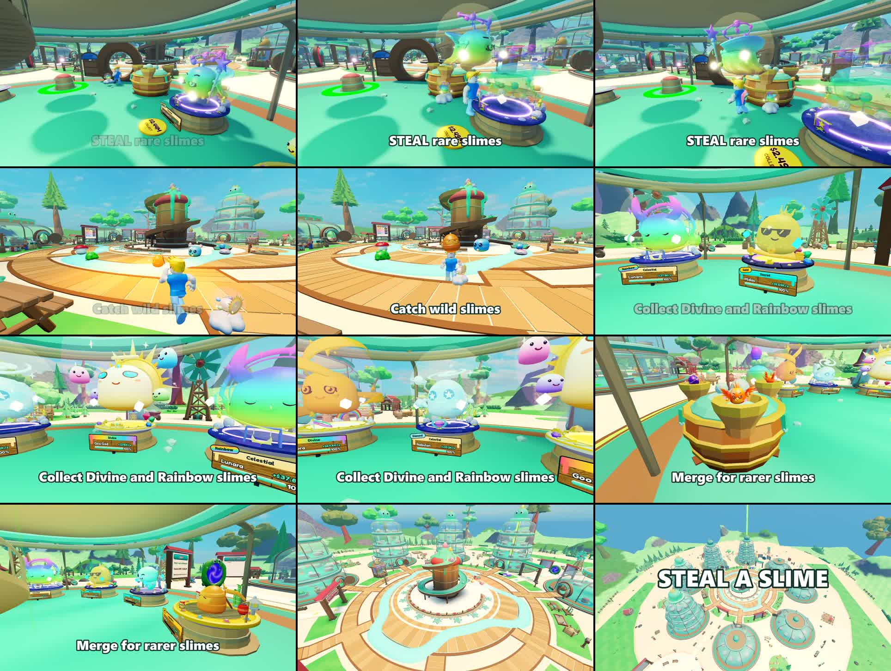

Store-page video: draft 1
Steal a Slime gameplay video for Creator Hub → Game details. 17.9 s, 1920×1080, 30 fps, no audio. Not uploaded: it needs your pick and OK first.
Pick one
- A: captions (≥ 84 px) for viewers who watch muted, and a "STEAL A SLIME" title on the last shot.
- B: the same footage, clean.
- Or ask for changes: a shot to drop, swap or add (see "Not in this cut" below), other caption words, a different avatar as the thief.
Storyboard
| Time | Planned beat | In this cut | Caption |
|---|---|---|---|
| 0.0–3.6 s | Hook: sneak into another base, grab a rare slime | yes Real steal of a neighbour's Rainbow Celestial, run out with it overhead | STEAL rare slimes |
| 3.6–6.5 s | Catch a wild slime | yes Grab a wild Legendary on the lane by the fountain | Catch wild slimes |
| – | It lands in your base and earns cash | dropped The game deposits at the base edge before the camera saw it; earning shows as +$/s labels in the next shot | – |
| 6.5–10.1 s | Rare slimes, Mythic to Divine, Gold/Diamond/Rainbow shines | yes Orbit past Rainbow Celestial, Gold Secret, Divine "Goo God" (+$215K/s), Diamond Celestial, Gold Divine | Collect Divine and Rainbow slimes |
| 10.1–13.7 s | Merge vat brews a hybrid | yes Three Mythics finish brewing, the result pops onto the pad (small on screen) | Merge for rarer slimes |
| – | PvP bat bonk sends a stolen slime home | not shot Needs a second real player; a hidden Studio can't add one, and I did not want a faked puppet | – |
| – | Rebirth, Top Earners podium or boss | not shot Ran out of time; the boss can be staged with the same tools | – |
| 13.7–17.9 s | End shot of the whole map with bases | yes Crane up from the fountain over all eight jar bases | STEAL A SLIME |
Key frames

Good to know
- All footage is this game in Roblox Studio, on the in-memory test store. Gameplay ran through the real server code; the scene (rare slimes, three stand-in neighbours) was set up with the admin test cheats.
- The thief is your own avatar (the Studio test player). Name and VIP tag are hidden.
- I checked motion frame by frame and with a jump check, but no person has watched it as a moving video yet, and it has not been seen on a phone or in the Creator Hub player.
- No sound by design (muted autoplay, no copyrighted music).